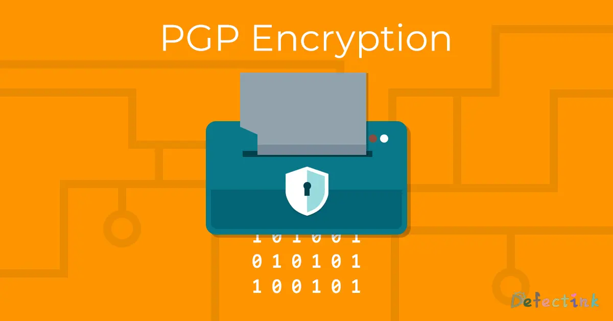

pgp 2020-02-23 17:03:44如果想对我说悄悄话，可以使用非对称加密给我发邮件。Pretty Good Privac在这个信息横飞的时代，安全隐私也成为了不可或缺的一部分。非对称加密或许一种优良的解决方案。pgp的形成一定程度上实现了隐私的存在。有关于非对称加密的一些大体原理，可以参考一下我曾经水过的一篇文：公开密钥密码学🔑我的公钥🔒！GitsOnedrive 2020-02-23 17:03:44目录Pretty Good Privac我的公钥🔒！